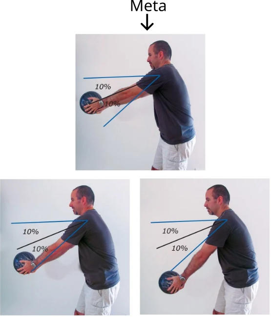
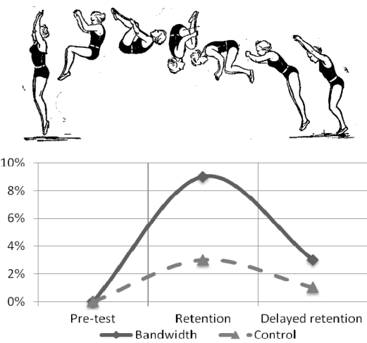
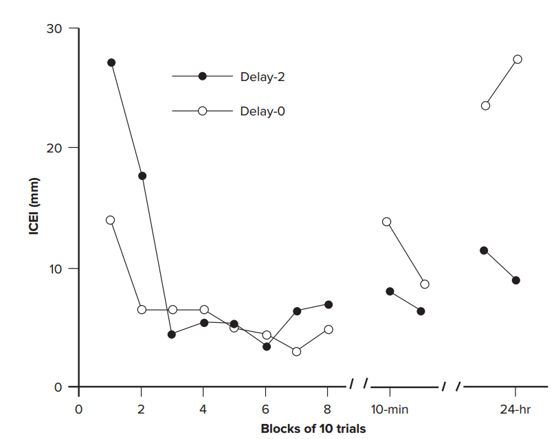
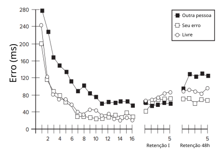
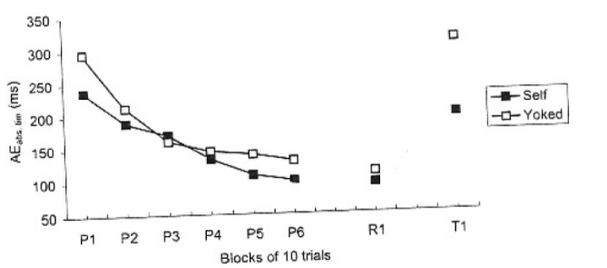
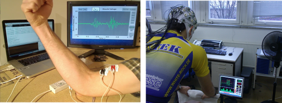

Bem vindo
19/05 |
A área Comportamento Motor e Classificação da habilidades |
07/07 |
Feedback |
26/05 |
Conceitos do Comportamento Motor e Medidas de desempenho |
14/07 |
Variabilidade da prática |
02/06 |
Princípios e conceitos da aprendizagem motora |
21/07 |
Prática mental |
09/06 |
Processos de memória: codificação, consolidação e evocação |
28/07 |
Fragmentação da prática e Relação entre prática e repouso |
16/06 |
Transferência de Aprendizagem |
04/08 |
Instrução verbal, demonstração e metas |
23/06 |
Teorias da aprendizagem motora |
11/08 |
Avaliação 2 |
30/06 |
Avaliação 1 |
18/08 |
Algumas implicações para a intervenção profissional |
25/08 |
Apresentação do Trabalho |
||
01/09 |
Projeto de Pesquisa |
Conceito de Feedback
Funções do Feedback
Classificação do Feedback
Efeito da quantidade de Feedback na prática
Tempo para o Feedback
Feedback auto-controlado e biofeedback
No contexto da cibernética, o conceito de feedback foi desenvolvido pelo matemático e cientista Norbert Wiener.
A cibernética é o estudo dos sistemas de controle e comunicação em máquinas e organismos vivos.
FB = Timoneiro.
Essa lei, em linhas gerais, estabelece relação entre a natureza da resposta e a avaliação posterior que lhe está associada.
Ações que são seguidas por consequências prazerosas ou satisfatórias têm maior probabilidade de serem repetidas. Oposto também é verdadeiro.
FB constitui-se num fator vital para aprendizagem.
Duplas, defina quem será o experimentador;
Recorte 20 tiras de folha;
A meta da tarefa é desenhar uma linha reta com 7 centímetros com os olhos fechados.
Um da dupla, o experimentador, pega as instruções com o professor. Não deixe o colega ler as instruções.
Organize suas 30 tentativas anotado o erro do seu colega. Será considerado erro caso o voluntário fique entre 6 e 8 centímetros. Nas primeiras 10 tentativas não forneça feedback para o colega (correto ou errado) Entre a 11-20 forneça feedback errado para o voluntário. Entre 20-30 forneça feedback correto.
Motivacional
Informacional
Feedback e desenvolvimento dos mecanismos de detecção e correção de erros.
Quando a análise do movimento é realizada ou seu resultado é proveniente de fontes externas.
Ampliar ou suplementar o feedback intrínseco.
Hipótese do Direcionamento (ou Orientação)
O excesso de informação causaria dependência, provocando deterioração no desempenho durante os testes, quando o FB é retirado.
Existe alguma relação entre Hipótese do Direcionamento (ou Orientação) e a Transferência de aprendizagem?
Nós ensinamos/treinamos nossos alunos/atletas para se tornarem menos dependentes de nós?
Hipótese da Consistência
Alta frequência de FB leva a realização de constantes ajustes, isso dificulta a estabilização de um plano de ação.
Quais relações possíveis entre a Hipótese da Consistência e característica da aprendizagem Consistência?
Quais relações possíveis a Hipótese da Consistência e o Modelo da Gentile 1972 para aprendizagem?
Relacionada - se à quantidade de FBs recebidos em determinada quantidade de prática.
O fornecimento de FB é reduzido ao longo das tentativas.
Valor médio de um conjunto de tentativas.
Informação fornecida na forma de um resumo sobre um bloco de tentativas.
Depende das tentativas que não alcançaram uma faixa de erro preestabelecidas.
Se fosse 10% de faixa, qual receberia FB?
Se fosse 1% de faixa, qual receberia FB?
Faixa por componentes mais importantes
 Sadowski, J., Mastalerz, A., & Niznikowski, T. (2013). Benefits of bandwidth feedback in learning a complex gymnastic skill. Journal of human kinetics, 37, 183.Concomitante (online) e Terminal
Não fornecer pré-FB prejudica a aprendizagem

Anderson et al. Research Quarterly for Exercise and Sport, Vol. 65, No. 3, 286–290..Fato interessante sobre o pré-FB

Swinnen, S. P. (1990). Interpolated activities during the knowledge of results delay and post-knowledge of results interval: Effects on performance and learning. Journal of Experimental Psychology: Learning, Memory, and Cognition, 16, 692–705.- Intervalos intermediários para o pré e pós-FB.
- Intervalos intermediários entre as tentativas.
O aprendiz controla o momento do recebimento da informação.

Fornece informações sobre os processos fisiológicos através do uso de instrumentos
Conceito d Feedback - Informação de retorno sobre o movimento
Funções do Feedback - Motivacional e Informacional
Classificação do Feedback - Extrínseco e Intrínseco
Extrínseco - CR e CP
Menos FB melhor
Explicações: Orientação e consistência
Tempos intermediários são adequados
Dois grupos, 33% e 100%.
5 pré - 50 tentativas na aquisição - 5 pós.